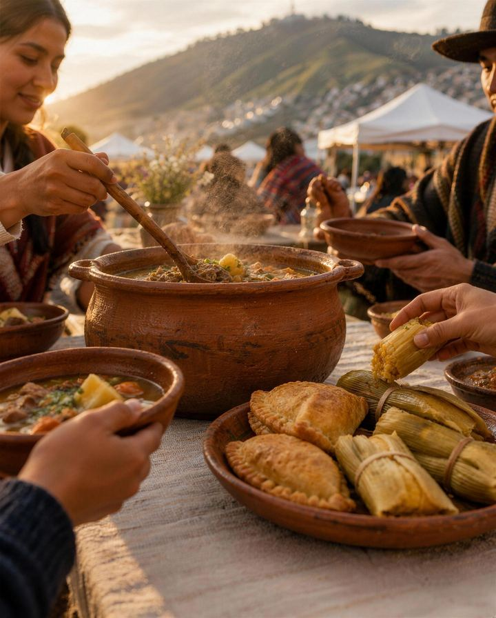
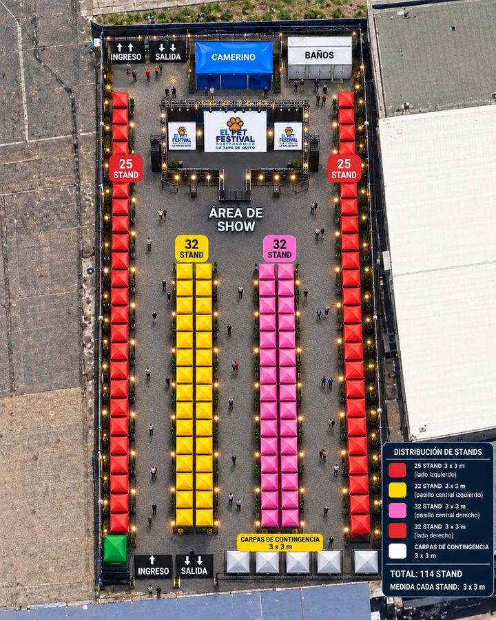

El Pets Festival Gastronómico · La Yapa de Quito
Sábado 12 y domingo 13 de diciembre 2026
Vende en el festival
Carpas de 3 × 3 m para emprendimientos y comida típica, en la antigua pista del Parque Bicentenario.
Te escribimos con las condiciones cuando estén listas. Pedirlas no es reservar.
- Carpa
- 3 × 3 m
- Horario
- 09:00 a 21:00, los dos días
- Dónde
- Parque Bicentenario · al aire libre
La carpa
Lo que ya está definido
El valor, lo que incluye la carpa, el montaje y la ubicación se confirman con las condiciones.
El mapa
Dónde van las carpas


- 114 carpas en cuatro filas a lo largo de la explanada.
- Escenario y área de show en la cabecera.
- Un solo ingreso, con boletería, desde la Plaza del Oso.
- Carpas de contingencia junto al ingreso.
La ubicación de cada carpa se asigna con las condiciones; el mapa es referencial.

Cómo funciona
Tres pasos
Solicitud
Pide las condiciones de tu carpa
Escríbenos por WhatsApp y te enviamos el valor y las condiciones cuando estén listas. Pedirlas no es reservar ni pagar.
Pídelas por WhatsApp
Se abre un chat con el mensaje listo: completa tu nombre, tu emprendimiento y qué vendes. Si preparas alimentos en tu carpa, cuéntanoslo.
Pedir condiciones por WhatsAppWhatsApp +593 99 687 6304
Preguntas frecuentes
Lo que preguntan los emprendedores
¿Cuánto cuesta una carpa?
El valor se envía con las condiciones, cuando estén listas.
¿La carpa es por los dos días?
Se confirma con las condiciones.
¿Puedo cocinar en la carpa?
Cuéntalo por WhatsApp. Cocinar con gas necesita una autorización del recinto: los requisitos vienen con las condiciones.
¿Puedo elegir dónde va mi carpa?
La ubicación se asigna con las condiciones.
Soy una marca y quiero auspiciar, ¿con quién hablo?
Escríbenos por WhatsApp al +593 99 687 6304.